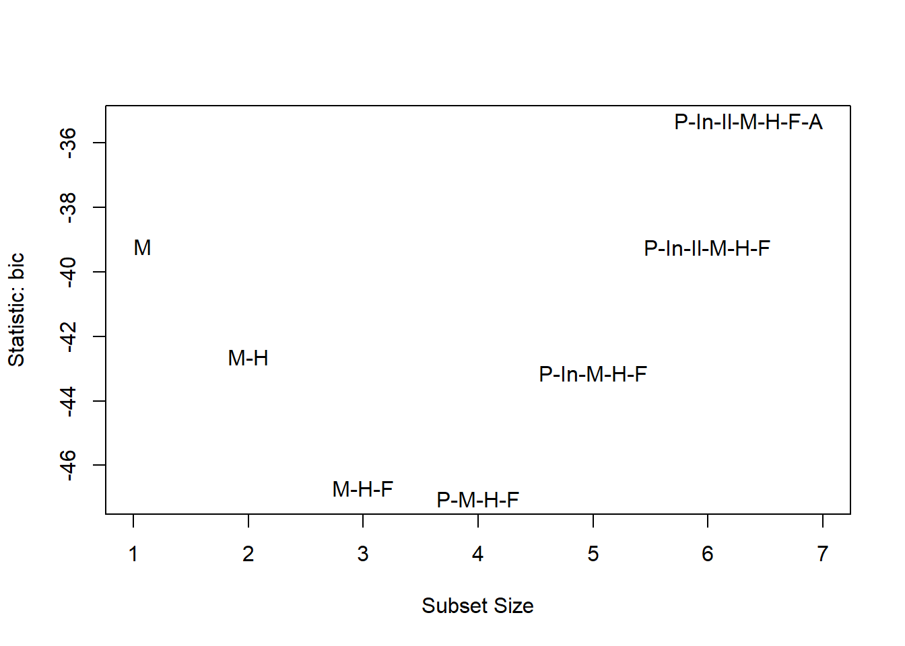

Chapter 6 Linear model estimation
6.1 A simple motivating example
Suppose you observe data related to the heights of 5 mothers and their adult daughters. The observed heights (measured in inches) are provided in Table 6.1.
| observation | mother’s height (in) | daughter’s height (in) |
|---|---|---|
| 1 | 57.5 | 61.5 |
| 2 | 60.5 | 63.5 |
| 3 | 63.5 | 63.5 |
| 4 | 66.5 | 66.5 |
| 5 | 69.5 | 66.5 |
The 5 pairs of observed data are denoted \[(x_1, Y_1), (x_2, Y_2), \ldots, (x_5, Y_5),\] with \((x_i, Y_i)\) denoting the data for observation \(i\). \(x_i\) denotes the mother’s height for observation \(i\) and \(Y_i\) denotes the daughter’s height for observation \(i\). In this data set, e.g., \(x_3 = 63.5\) and \(Y_5= 66.5\).
Figure 6.1 displays a scatter plot of height data provided in Table 6.1. The relationship between the points is approximately a straight line. Thus, we will model the typical (mean) relationship between the height of mothers and their adult daughters as a straight line.

Figure 6.1: A scatter plot displaying pairs of heights for a mother and her adult daughter.
The \(x_1,x_2,\ldots,x_5\) are observed values of a random variable \(X\), while \(Y_1, Y_2, \ldots, Y_5\) are observed values of a random variable \(Y\). Thus, \(X\) denotes the height a mother and \(Y\) denotes the height of (one of) their adult daughter(s). We want to model variable \(Y\) using variable \(X\). The variable we are trying to model is known as the response variable. The variables we use to model the response are known as regressor variables. Response variables are also known as outcome, output, or dependent variables. Regressor variables are also known as explanatory, predictor, input, dependent, or feature variables.
A regression model describes the typical relationship between the response variable \(Y\) as a function of the regressor variable \(X\). More formally, the regression model for \(Y\) as a function of \(X\), denoted \(E(Y|X)\) is the expected value of \(Y\) conditional on the regressor \(X\). The regression model specifically refers to the expected relationship between the response and regressors.
A simple linear regression model assumes the regression model between \(Y\) and \(X\) is a straight line using the equation \[E(Y\mid X)=\beta_0 + \beta_1 X.\] \(\beta_0\) and \(\beta_1\) are the intercept and slope of our regression functions. In general, \(\beta_0\) and \(\beta_1\) are known as regression coefficients and are model parameters that we estimate from our data.
The estimated regression model is denoted by \[\hat{E}(Y|X)=\hat{\beta}_0 + \hat{\beta}_1 X,\] where \(\hat{\beta}_0\) and \(\hat{\beta}_1\) are values of \(\beta_0\) and \(\beta_1\) that we estimate from the data. A \(\hat{}\) above a term indicates it is an estimate. We will refer to \(\hat{E}(Y|X)\) as the fitted model or estimated regression model.
How do we determine the “best fitting” model? Consider Figure 6.2, in which 2 potential “best fitting” models are drawn on the scatter plot of the height data. Which one is best?

Figure 6.2: Comparison of three potential fitted models to some observed data. The fitted models are shown in grey.
The rest of this chapter focuses on defining and estimating the parameters of a linear regression model.
6.2 Defining a linear model
6.2.1 Necessary components and notation
We begin by defining notation for the components of a linear model and some of their important properties. We repeat some of the previous discussion for clarity.
\(Y\) denotes the response variable.
- The response variable is treated as a random variable.
- We will observe realizations of this random variable for each observation in our data set.
\(X\) denotes a single regressor variable. \(X_1\), \(X_2\), , \(X_{p-1}\) denote distinct regressor variables if we are performing multiple regression.
- The regressor variables are treated as non-random variables.
- The observed values of the regressor variables are treated as fixed, known values.
\(\mathbb{X}=\{X_1,\ldots,X_{p-1}\}\) denotes the collection of all regressors under consideration, though this notation is really only needed in the context of multiple regression.
\(\beta_0\), \(\beta_1\), \(\ldots\), \(\beta_{p-1}\) denote regression coefficients.
- Regression coefficients are statistical parameters that we will estimate from our data.
- The regression coefficients are treated as fixed (non-random) but unknown values.
- Regression coefficients are not observable.
\(\epsilon\) denotes model error.
- The model error is more accurately described as random variation of each observation from the regression model \(E(\epsilon\mid\mathbb{X})\).
- The error is treated as a random variable.
- The error is assumed to have mean 0 for all values of the regressors, i.e., \(E(\epsilon\mid\mathbb{X}) = 0\).
- The variance of the errors is assumed to be a constant value for all values of the regressors, i.e., \(\mathrm{var}(\epsilon\mid\mathbb{X})=\sigma^2\).
- The error is never observable (except in the context of a simulation study where the experimenter literally defines the true model).
6.2.2 Standard definition of linear model
A linear model for \(Y\) is defined by the equation \[\begin{align} Y &= \beta_0 + \beta_1 X_1 + \beta_2 X_2 + \cdots + \beta_{p-1} X_{p-1} + \epsilon \\ &= E(Y \mid \mathbb{X}) + \epsilon \tag{6.1} \end{align}\]
We write the model using the form in Equation (6.1) to emphasize the fact the response value equals the expected response for that combination of regressor values plus some error. It should be clear from comparing Equation (6.1) with the previous line that \[E(Y \mid \mathbb{X}) = \beta_0 + \beta_1 X_1 + \beta_2 X_2 + \cdots + \beta_{p-1} X_{p-1},\] which we will prove later.
More generally, one can say that a regression model is linear if the mean function can be written as a linear combination of the regression coefficients and known values created from our regressor variables, i.e., \[\begin{equation} E(Y \mid X_1, X_2, \ldots, X_{p-1}) = \sum_{j=0}^{p-1} c_j \beta_j, \tag{6.2} \end{equation}\] where \(c_0, c_1, \ldots, c_{p-1}\) are known functions of the regressor variables, e.g., \(c_1 = X_1 X_2 X_3\), \(c_3 = X_2^2\), \(c_8 = \ln(X_1)/X_2^2\), etc. Thus, if \(g_0,\ldots,g_{p-1}\) are functions of \(\mathbb{X}\), then we can say that the regression model is linear if it can be written as \[E(Y\mid \mathbb{X}) = \sum_{j=0}^{p-1} g_j(\mathbb{X})\beta_j.\]
Some examples of linear regression models:
- \(E(Y|X) = \beta_0\).
- \(E(Y|X) = \beta_0 + +\beta_1 X + \beta_2 X^2\).
- \(E(Y|X_1, X_2) = \beta_0 + \beta_1 X_1 + \beta_2 X_2\).
- \(E(Y|X_1, X_2) = \beta_0 + \beta_1 X_1 + \beta_2 X_2 + \beta_3 X_1 X_2\).
- \(E(Y|X_1, X_2) = \beta_0 + \beta_1 \ln(X_1) + \beta_2 X_2^{-1}\).
- \(E(\ln(Y)|X_1, X_2) = \beta_0 + \beta_1 X_1 + \beta_2 X_2\).
- \(E(Y^{-1}|X_1, X_2) = \beta_0 + \beta_1 X_1 + \beta_2 X_2\).
Some examples of non-linear regression models:
- \(E(Y|X) = \beta_0 + e^{\beta_1 X}\).
- \(E(Y|X) = \beta_0 + \beta_1 X/(\beta_2 + X)\).
The latter regression models are non-linear models because there is no way to express them using the expression in Equation (6.2).
There are many different methods of parameter estimation in statistics: method-of-moments, maximum likelihood, Bayesian, etc. The most common parameter estimation method for linear models is the least squares method, which is commonly called Ordinary Least Squares (OLS) estimation. OLS estimation estimates the regression coefficients with the values that minimize the residual sum of squares (RSS), which we will define shortly.
6.3 Estimation of the simple linear regression model
6.3.1 Fitted values, residuals, and RSS
Recall that a simple linear regression model is defined by the equation \[Y = \beta_0 + \beta_1 X + \epsilon = E(Y|X) + \epsilon\] where \[E(Y|X) = \beta_0 + \beta_1 X.\] In a simple linear regression context, we have \(n\) observed responses \(Y_1,Y_2,\ldots,Y_n\) and \(n\) regressor values \(x_1,x_2,\ldots,x_n\).
Let \(\hat{\beta}_j\) denote the estimated value of \(\beta_j\) and \(\hat{E}(Y|X) = \hat{\beta}_0 + \hat{\beta}_1 X\) denote the estimated regression model.
The \(i\)th fitted value is defined as \[\begin{equation} \hat{Y}_i = \hat{E}(Y|X = x_i) = \hat{\beta}_0 + \hat{\beta}_1 x_i. \tag{6.3} \end{equation}\] Thus, the \(i\)th fitted value is the estimated mean of \(Y\) when the regressor \(X=x_i\). More specifically, the \(i\)th fitted value is the estimated mean response for the combination of regressor values observed for the \(i\)th observation.
The \(i\)th residual is defined as \[\begin{equation} \hat{\epsilon}_i = Y_i - \hat{Y}_i. \tag{6.4} \end{equation}\] The \(i\)th residual is the difference between the response and estimated mean response of observation \(i\).
The RSS of a regression model is the sum of its squared residuals.
The RSS for a simple linear regression model, as a function of the estimated regression coefficients \(\hat{\beta}_0\) and \(\hat{\beta}_1\), is defined as \[\begin{equation} RSS(\hat{\beta}_0, \hat{\beta}_1) = \sum_{i=1}^n \hat{\epsilon}_i^2. \tag{6.5} \end{equation}\]
Using several of objects defined above, there are many equivalent expressions for the RSS. Notably, Equation (6.5) can be rewritten using Equations (6.4) and (6.3) as \[\begin{align*} RSS(\hat{\beta}_0, \hat{\beta}_1) &= \sum_{i=1}^n \hat{\epsilon}_i^2 \\ &= \sum_{i=1}^n (Y_i - \hat{Y}_i)^2 & \\ &= \sum_{i=1}^n (Y_i - \hat{E}(Y|X=x_i))^2 \\ &= \sum_{i=1}^n (Y_i - (\hat{\beta}_0 + \hat{\beta}_1 x_i))^2. \end{align*}\]
The fitted model is the estimated model that minimizes the RSS, i.e., the fitted model (in the context of simple linear regression) is defined as \[\begin{equation} \hat{E}(Y|X) = \hat{\beta}_0 + \hat{\beta}_1 X. \tag{6.6} \end{equation}\] In a simple linear regression context, the fitted model is known as the line of best fit.
In Figure 6.3, we visualize the response values, fitted values, residuals, and fitted model in a simple linear regression context. Note that:
- The fitted model is shown as the dashed grey line and minimizes the RSS.
- The fitted values, shown as blue x’s, are the values returned by evaluating the fitted model at the observed regressor values.
- The residuals, shown as solid orange lines, indicate the distance and direction between the observed responses and their corresponding fitted value. If the response is larger than the fitted value then the residual is positive, otherwise it is negative.
- The RSS is the sum of the squared vertical distances between the response and fitted values.

Figure 6.3: Visualization of the response values, fitted values, residuals, and fitted model.
6.3.2 OLS estimators of the simple linear regression parameters
The estimates of \(\beta_0\) and \(\beta_1\) that minimize the RSS for a simple linear regression model can be obtained analytically using basic calculus under minimal assumptions. Specifically, the optimal analytical solutions for \(\hat{\beta}_0\) and \(\hat{\beta}_1\) are valid as long as the regressor values are not a constant value, i.e, \(x_i \neq x_j\) for at least some \(i,j\in \{1,2,\ldots,n\}\).
Define \(\bar{x}=\frac{1}{n}\sum_{i=1}^n x_i\) and \(\bar{Y} = \frac{1}{n}\sum_{i=1}^n Y_i\). The OLS estimators of the simple linear regression coefficients are
\[\begin{align} \hat{\beta}_1 &= \frac{\sum_{i=1}^n x_i Y_i - \frac{1}{n} \biggl(\sum_{i=1}^n x_i\biggr)\biggl(\sum_{i=1}^n Y_i\biggr)}{\sum_{i=1}^n x_i^2 - \frac{1}{n} \biggl(\sum_{i=1}^n x_i\biggr)^2} \notag \\ &= \frac{\sum_{i=1}^n (x_i - \bar{x})(Y_i - \bar{Y})}{\sum_{i=1}^n (x_i - \bar{x})^2} \notag \\ &= \frac{\sum_{i=1}^n (x_i - \bar{x})Y_i}{\sum_{i=1}^n (x_i - \bar{x})x_i} \tag{6.7} \end{align}\] and \[\begin{equation} \hat{\beta}_0 = \bar{Y} - \hat{\beta}_1 \bar{x}. \tag{6.8} \end{equation}\]
We emphasize once again that the OLS estimators of \(\beta_0\) and \(\beta_1\) are the estimators that minimize the RSS.
In edition to the regression coefficients, the other parameter we discussed (in Section 6.2.1) is the error variance, \(\sigma^2\). The most common estimator of the error variance is \[\begin{equation} \hat{\sigma}^2 = \frac{RSS}{n-p}, \tag{6.9} \end{equation}\] where \(p\) is the number of regression coefficients. In general, \(n-p\) is the degrees of freedom of the RSS. In a simple linear regression context, the denominator of Equation (6.9) is \(n-2\).
6.4 Penguins simple linear regression example
We will use the penguins data set in the palmerpenguins package
(Horst, Hill, and Gorman 2020) to illustrate a very basic simple linear regression
analysis.
The penguins data set provides data related to various penguin species
measured in the Palmer Archipelago (Antarctica), originally provided by
Gorman, Williams, and Fraser (2014). We start by loading the data into memory.
data(penguins, package = "palmerpenguins")The data set includes 344 observations of 8 variables. The variables are:
species: afactorindicating the penguin speciesisland: afactorindicating the island the penguin was observedbill_length_mm: anumericvariable indicating the bill length in millimetersbill_depth_mm: anumericvariable indicating the bill depth in millimetersflipper_length_mm: anintegervariable indicating the flipper length in millimetersbody_mass_g: anintegervariable indicating the body mass in gramssex: afactorindicating the penguin sex (female,male)year: an integer denoting the study year the penguin was observed (2007,2008, or2009)
We begin by creating a scatter plot of bill_length_mm versus
body_mass_g (y-axis versus x-axis) in Figure 6.4.
We see a clear positive association between body mass and bill length:
as the body mass increases, the bill length tends to increase. The
pattern is linear, i.e., roughly a straight line.
plot(bill_length_mm ~ body_mass_g, data = penguins,
ylab = "bill length (mm)", xlab = "body mass (g)",
main = "Penguin size measurements")
Figure 6.4: A scatter plot of penguin bill length (mm) versus body mass (g)
We first perform a single linear regression analysis manually using the
equations previously provided by regressing bill_length_mm on
body_mass_g.
Using the summary function on the penguins data frame, we see that
both bill_length_mm and body_mass_g have NA values.
summary(penguins)## species island bill_length_mm bill_depth_mm
## Adelie :152 Biscoe :168 Min. :32.10 Min. :13.10
## Chinstrap: 68 Dream :124 1st Qu.:39.23 1st Qu.:15.60
## Gentoo :124 Torgersen: 52 Median :44.45 Median :17.30
## Mean :43.92 Mean :17.15
## 3rd Qu.:48.50 3rd Qu.:18.70
## Max. :59.60 Max. :21.50
## NA's :2 NA's :2
## flipper_length_mm body_mass_g sex year
## Min. :172.0 Min. :2700 female:165 Min. :2007
## 1st Qu.:190.0 1st Qu.:3550 male :168 1st Qu.:2007
## Median :197.0 Median :4050 NA's : 11 Median :2008
## Mean :200.9 Mean :4202 Mean :2008
## 3rd Qu.:213.0 3rd Qu.:4750 3rd Qu.:2009
## Max. :231.0 Max. :6300 Max. :2009
## NA's :2 NA's :2We want to remove the rows of penguins where either body_mass_g or
bill_length_mm have NA values. We do that below using the na.omit
function (selecting only the relevant variables) and assign the cleaned
object the name penguins_clean.
# remove rows of penguins where bill_length_mm or body_mass_g have NA values
penguins_clean <- na.omit(penguins[,c("bill_length_mm", "body_mass_g")])We extract the bill_length_mm variable from the penguins data frame
and assign it the name y since it will be the response variable. We
extract the body_mass_g variable from the penguins data frame and
assign it the name y since it will be the predictor variable. We also
determine the number of observations and assign that value the name n.
# extract response and predictor from penguins_clean
y <- penguins_clean$bill_length_mm
x <- penguins_clean$body_mass_g
# determine number of observations
n <- length(y)We now compute \(\hat{\beta}_1\) and \(\hat{\beta}_0\). Note that placing
() around the assignment operations will both perform the assign and
print the results.
# compute OLS estimates of beta1 and beta0
(b1 <- (sum(x * y) - sum(x) * sum(y) / n)/(sum(x^2) - sum(x)^2/n))## [1] 0.004051417(b0 <- mean(y) - b1 * mean(x)) ## [1] 26.89887The estimated value of \(\beta_0\) is \(\hat{\beta}_0=26.90\) and the estimated value of \(\beta_1\) is \(\hat{\beta}_1=0.004\). The basic mathematical interpretation of our results is that:
- (\(\hat{\beta}_1\)): If a penguin has a body mass 1 gram larger than another penguin, we expect the larger penguins bill length to be 0.004 millimeters longer.
- (\(\hat{\beta}_0\)):A penguin with a body mass of 0 grams is expected to have a bill length of 26.9 millimeters.
The latter interpretation is clearly non-sensical and is caused by the fact that we are extrapolating far outside the observed body mass values. The relationship between body mass and bill length is different for penguin chicks versus adults.
We can use the abline function to overlay the fitted model on the
observed data. Note that in simple linear regression, \(\hat{\beta}_1\)
corresponds to the slope of the fitted line and \(\hat{\beta}_0\) will be
the intercept.
plot(bill_length_mm ~ body_mass_g, data = penguins,
ylab = "bill length (mm)", xlab = "body mass (g)",
main = "Penguin size measurements")
# a is the intercept and b is the slope
abline(a = b0, b = b1)
The fit of the model to our observed data seems reasonable.
We can also compute the residuals, \(\hat{\epsilon}_1,\ldots,\hat{\epsilon}_n\), the fitted values \(\hat{y}_1,\ldots,\hat{y}_n\), and the associated RSS, \(RSS=\sum_{i=1}^n \hat{\epsilon}_i^2\).
yhat <- b0 + b1 * x # compute fitted values
ehat <- y - yhat # compute residuals
(rss <- sum(ehat^2)) # sum of the squared residuals## [1] 6564.494(sigmasqhat <- rss/(n-2)) # estimated error variance## [1] 19.307346.5 Estimation of the multiple linear regression coefficients)
We now consider the context where we want to estimate the parameters of a linear model with 1 or more regressors, i.e., when \[Y=\beta_0 + \beta_1 X_1 + \cdots + \beta_{p-1} X_{p-1} + \epsilon.\]
The multiple linear regression model relating the responses, the regressors, and the errors for all \(n\) observations is defined by the system of equations \[\begin{equation} Y_i = \beta_0 + \beta_1 x_{i,1} + \beta_2 x_{i,2} + \cdots + \beta_{p-1} x_{i,p-1} + \epsilon_i,\quad i=1,2,\ldots,n. \tag{6.10} \end{equation}\]
6.5.1 Using matrix notation to represent a linear model
To simplify estimation of the regression coefficients in a linear regression model, we must use matrix notation to describe the system of equation defining our linear model.
We define the following notation:
- \(\mathbf{y} = [Y_1, Y_2, \ldots, Y_n]\) denotes the column vector containing the \(n\) responses.
- \(\mathbf{X}\) denotes the matrix containing a column of 1s and the observed regressor values, specifically, \[\mathbf{X} = \begin{bmatrix} 1 & x_{1,1} & x_{1,2} & \cdots & x_{1,p-1} \\ 1 & x_{2,1} & x_{2,2} & \cdots & x_{2,p-1} \\ \vdots & \vdots & \vdots & \vdots & \vdots \\ 1 & x_{n,1} & x_{n,2} & \cdots & x_{n,p-1} \end{bmatrix}.\]
- \(\boldsymbol{\beta} = [\beta_0, \beta_1, \ldots, \beta_{p-1}]\) denotes the column vector containing the \(p\) regression coefficients.
- \(\boldsymbol{\epsilon} = [\epsilon_1, \epsilon_2, \ldots, \epsilon_n]\) denotes the column vector contained the \(n\) errors.
Then the system of equations defining the linear model in (6.10) can be written as \[\mathbf{y} = \mathbf{X}\boldsymbol{\beta} + \boldsymbol{\epsilon}.\] Thus, a linear model can be represented as a system of linear equations using matrices. A model that cannot be represented as a system of linear equations using matrices is not a linear model.
6.5.2 Residuals, fitted values, and RSS for multiple linear regression
We proceed with discussion of residuals, fitted values, and RSS for the multiple linear regression context using matrix notation.
The vector of estimated values for the coefficients contained in \(\boldsymbol{\beta}\) is denoted by \[\begin{equation} \hat{\boldsymbol{\beta}}=[\hat{\beta}_0,\hat{\beta}_1,\ldots,\hat{\beta}_{p-1}]. \tag{6.11} \end{equation}\]
The vector of regressor values for the \(i\)th observation is denoted by \[\begin{equation} \mathbf{x}_i=[1,x_{i,1},\ldots,x_{i,p-1}], \tag{6.12} \end{equation}\] where the 1 is needed to account for the intercept in our model.
Extending the original definition of a fitted value in Equation (6.3), the \(i\)th fitted value in the context of multiple linear regression is defined as \[\begin{align} \hat{Y}_i &= \hat{E}(Y|\mathbb{X} = \mathbf{x}_i) \notag \\ &= \hat{\beta}_0 + \hat{\beta}_1 x_{i,1} + \cdots + \hat{\beta}_{p-1} x_{i,p-1} \notag \\ &= \mathbf{x}_i^T\hat{\boldsymbol{\beta}}. \tag{6.13} \end{align}\]
The (column) vector of fitted values is defined as \[\begin{equation} \hat{\mathbf{y}} = [\hat{Y}_1,\ldots,\hat{Y}_n]. \tag{6.14} \end{equation}\]
Extending the original definition of a residual in Equation (6.4), the \(i\)th residual in the context of multiple linear regression can be written as \begin{align} _i = Y_i - _i=Y_i-_i^T, \end{equation} using Equation (6.13).
The RSS for a simple linear regression model, as a function of the estimated regression coefficients, is \[\begin{align*} RSS(\hat{\beta}_0, \hat{\beta}_1) &= \sum_{i=1}^n \hat{\epsilon}_i^2 \\ &= \sum_{i=1}^n (Y_i - \hat{Y}_i)^2 \\ &= \sum_{i=1}^n (Y_i - \hat{E}(Y|X=x_i))^2 \\ &= \sum_{i=1}^n (Y_i - (\hat{\beta}_0 + \hat{\beta}_1 x_i))^2. \end{align*}\]
6.5.3 OLS estimator of the linear model parameters
The OLS estimator of the regression coefficient vector, \(\boldsymbol{\beta}\), is
\[\begin{equation} \hat{\boldsymbol{\beta}} = (\mathbf{X}^T\mathbf{X})^{-1}\mathbf{X}^T\mathbf{y}, \tag{6.15} \end{equation}\]6.6 Penguins multiple linear regression example
The data set includes 344 observations of 8 variables. The variables are:
species: afactorindicating the penguin speciesisland: afactorindicating the island the penguin was observedbill_length_mm: anumericvariable indicating the bill length in millimetersbill_depth_mm: anumericvariable indicating the bill depth in millimetersflipper_length_mm: anintegervariable indicating the flipper length in millimetersbody_mass_g: anintegervariable indicating the body mass in gramssex: afactorindicating the penguin sex (female,male)year: an integer denoting the study year the penguin was observed (2007,2008, or2009)
mlmod <- lm(bill_length_mm ~ body_mass_g + flipper_length_mm, data = penguins)
summary(mlmod)##
## Call:
## lm(formula = bill_length_mm ~ body_mass_g + flipper_length_mm,
## data = penguins)
##
## Residuals:
## Min 1Q Median 3Q Max
## -8.8064 -2.5898 -0.7053 1.9911 18.8288
##
## Coefficients:
## Estimate Std. Error t value Pr(>|t|)
## (Intercept) -3.4366939 4.5805532 -0.750 0.454
## body_mass_g 0.0006622 0.0005672 1.168 0.244
## flipper_length_mm 0.2218655 0.0323484 6.859 3.31e-11 ***
## ---
## Signif. codes: 0 '***' 0.001 '**' 0.01 '*' 0.05 '.' 0.1 ' ' 1
##
## Residual standard error: 4.124 on 339 degrees of freedom
## (2 observations deleted due to missingness)
## Multiple R-squared: 0.4329, Adjusted R-squared: 0.4295
## F-statistic: 129.4 on 2 and 339 DF, p-value: < 2.2e-166.7 Categorical predictors
6.8 Penguins multiple linear regression example with categorical predictor
library(ggplot2)
ggplot(data = penguins) + geom_point(aes(x = body_mass_g, y = bill_length_mm, col = species))## Warning: Removed 2 rows containing missing values (geom_point).
lmodb <- lm(bill_length_mm ~ body_mass_g + species + body_mass_g:species, data = penguins)
summary(lmodb)##
## Call:
## lm(formula = bill_length_mm ~ body_mass_g + species + body_mass_g:species,
## data = penguins)
##
## Residuals:
## Min 1Q Median 3Q Max
## -6.4208 -1.6461 0.0919 1.4718 9.3138
##
## Coefficients:
## Estimate Std. Error t value Pr(>|t|)
## (Intercept) 26.9941391 1.5926015 16.950 < 2e-16 ***
## body_mass_g 0.0031879 0.0004271 7.464 7.27e-13 ***
## speciesChinstrap 5.1800537 3.2746719 1.582 0.115
## speciesGentoo -0.2545907 2.7138655 -0.094 0.925
## body_mass_g:speciesChinstrap 0.0012748 0.0008740 1.459 0.146
## body_mass_g:speciesGentoo 0.0009030 0.0006066 1.489 0.138
## ---
## Signif. codes: 0 '***' 0.001 '**' 0.01 '*' 0.05 '.' 0.1 ' ' 1
##
## Residual standard error: 2.399 on 336 degrees of freedom
## (2 observations deleted due to missingness)
## Multiple R-squared: 0.8098, Adjusted R-squared: 0.807
## F-statistic: 286.1 on 5 and 336 DF, p-value: < 2.2e-16lmodc <- lm(bill_length_mm ~ body_mass_g*species, data = penguins)
coefficients(lmodb)## (Intercept) body_mass_g
## 26.9941391367 0.0031878758
## speciesChinstrap speciesGentoo
## 5.1800537287 -0.2545906615
## body_mass_g:speciesChinstrap body_mass_g:speciesGentoo
## 0.0012748183 0.0009029956coefficients(lmodc)## (Intercept) body_mass_g
## 26.9941391367 0.0031878758
## speciesChinstrap speciesGentoo
## 5.1800537287 -0.2545906615
## body_mass_g:speciesChinstrap body_mass_g:speciesGentoo
## 0.0012748183 0.00090299566.9 Evaluating model fit
6.10 Summary of notation
6.11 Summary of functions used in this chapter
6.12 Summarizing the components of a linear model
We have already introduced a lot of objects. To aid in making sense of their notation, their purpose in the model, whether they can be observed, and whether they are modeled as a random variable (vector) or fixed, non-random values, we summarize things below.
We’ve already talked about observing the response variable and the predictor variables. So these objects are observable. However, we have no way to measure the regression coefficients or the error. These are not observable.
On the other hand, we treat the response variable as a random variable. Perhaps surprisingly, we treated the predictor variables as a fixed, non-random variables. The regression coefficients are treated as fixed, non-random but unknown values. This is standard for parameters in a statistical model. The errors are also treated as random variables. In fact, since both the predictor variables and the regression coefficients are non-random, the only way for the response to be a random variable based on Equation (6.10) is for the errors to be random.
We summarize this information in the table below for the objects previously discussed using the various notations introduced.
| Notation | Description | Observable | Random |
|---|---|---|---|
| \(Y\) | response variable | Yes | Yes |
| \(Y_i\) | response value for the \(i\)th observation | Yes | Yes |
| \(\mathbf{y}\) | the \(n\times 1\) column vector of response values | Yes | Yes |
| \(X\) | regressor variable | Yes | No |
| \(X_j\) | the \(j\)th regressor variable | Yes | No |
| \(x_{i,j}\) | the value of the \(j\)th regressor variable for the \(i\)th observation | Yes | No |
| \(\mathbf{X}\) | the \(n\times p\) matrix of regressor values | Yes | No |
| \(\beta_j\) | the regression coefficient associated with the \(j\)th regressor variable | No | No |
| $\boldsymbol{ | a}$| the $p column vector of regression coefficients | 1$ | No | | No |
| \(\epsilon\) | the error | No | Yes |
| \(\epsilon_i\) | the error associated with observation \(i\) | No | Yes |
6.13 Going Deeper
6.13.1 Manually estimating the simple linear regression coefficients
In this section we will manually perform the Penguins simple linear regression analysis provided in Section @ref{s:penguins-slr}.
Recall that the penguins data frame in the **palmerpenguins* package contained
the variables:
bill_length_mm: anumericvariable indicating the bill length in millimetersbody_mass_g: anintegervariable indicating the body mass in grams
We will use formulas for \(\hat{\beta}_0\) and \(\hat{\beta}_1\) in
Equations @ref\tag{6.7}
and @ref\tag{6.8} to manually compute the estimated regression
coefficients for the simple linear regression model when
regressing bill_length_mm on body_mass_g.
We first load the penguins data frame. We then select the bill_length_mm and body_mass_g variables of the data frame and use the pipe operator to pass the simplified data frame to the summary function.
data(penguins, package = "palmerpenguins") # load data
penguins[,c("bill_length_mm", "body_mass_g")] |> summary() # simplify and summarize## bill_length_mm body_mass_g
## Min. :32.10 Min. :2700
## 1st Qu.:39.23 1st Qu.:3550
## Median :44.45 Median :4050
## Mean :43.92 Mean :4202
## 3rd Qu.:48.50 3rd Qu.:4750
## Max. :59.60 Max. :6300
## NA's :2 NA's :2Both bill_length_mm and body_mass_g have NA values that will poison our calculations if we naively use those variables in our calculations, so we must remove them prior to calculation.
The na.omit function attempts to handle missing values in R objects. The penguins data frame has class data.frame. For a data.frame, na.omit will remove any rows that have NA values. Note that if you are only concerned with the NA values for certain variables of a data frame then you should apply the na.omit to the data frame containing only those variables, otherwise na.omit may remove rows unnecessarily because a different variable has an NA value.
Compare the dimensions of the results when we apply na.omit to penguins versus
penguins with only bill_length_mm and body_mass_g.
penguins |> na.omit() |> dim() # dimensions penguins after filtering rows with NA## [1] 333 8penguins[,c("bill_length_mm", "body_mass_g")] |> na.omit() |> dim()## [1] 342 2The data frame obtained after applying na.omit to the penguins
data frame has only 333 rows, while the data frame obtained by applying na.omit
to only the bill_length_mm and body_mass_g columns of penguins has 342 rows. This
is because some of the other variables in penguins have NA values in rows that
the bill_length_mm and body_mass_g columns do not, so the na.omit function must remove
additional rows.
Continuing our analysis, we create a new data frame, penguins_clean, that is
obtained by selecting the bill_length_mm and body_mass_g variables of penguins and
then using the na.omit function to retain only the rows without NA values.
# remove rows of penguins where bill_length_mm or body_mass_g have NA values
penguins_clean <- na.omit(penguins[,c("bill_length_mm", "body_mass_g")])We extract the bill_length_mm variable from the penguins_clean data frame
and assign it the name y since it will be the response variable. We
extract the body_mass_g variable from the penguins data frame and
assign it the name x since it will be the regressor variable. We also
determine the number of observations and assign that value the name n.
# extract response and regressor from penguins_clean
y <- penguins_clean$bill_length_mm
x <- penguins_clean$body_mass_g
# determine number of observations
n <- length(y)We now compute \(\hat{\beta}_1\) and \(\hat{\beta}_0\) using the formulas in Equations @ref\tag{6.7} and @ref\tag{6.8}, respectively. Note that placing
() around the assignment operations will both perform the assignment and
print the results.
# compute OLS estimates of beta1 and beta0
(b1 <- (sum(x * y) - sum(x) * sum(y) / n)/(sum(x^2) - sum(x)^2/n))## [1] 0.004051417(b0 <- mean(y) - b1 * mean(x)) ## [1] 26.89887The estimated value of \(\beta_0\) is $_0=$0 and the estimated value of \(\beta_1\) is \(\hat{\beta}_1=0.004\). The basic mathematical interpretation of our results is that:
- \(\hat{\beta}_1\): If a penguin has a body mass 1 gram larger than another penguin, we expect the larger penguins bill length to be 0.004 millimeters longer.
- \(\hat{\beta}_0\):A penguin with a body mass of 0 grams is expected to have a bill length of 26.9 millimeters.
The latter interpretation is clearly non-sensical and is caused by the fact that we are extrapolating far outside the observed body mass values. The relationship between body mass and bill length is different for penguin chicks versus adults.
We can use the abline function to overlay the fitted model on the
observed data. Note that in simple linear regression, \(\hat{\beta}_1\)
corresponds to the slope of the fitted line and \(\hat{\beta}_0\) will be
the intercept.
plot(bill_length_mm ~ body_mass_g, data = penguins,
ylab = "bill length (mm)", xlab = "body mass (g)",
main = "Penguin size measurements")
# a is the intercept and b is the slope
abline(a = b0, b = b1)
The fit of the model to our observed data seems reasonable.
We can also compute the residuals, \(\hat{\epsilon}_1,\ldots,\hat{\epsilon}_n\), the fitted values \(\hat{y}_1,\ldots,\hat{y}_n\), and the associated RSS, \(RSS=\sum_{i=1}^n \hat{\epsilon}_i^2\).
yhat <- b0 + b1 * x # compute fitted values
ehat <- y - yhat # compute residuals
(rss <- sum(ehat^2)) # sum of the squared residuals## [1] 6564.494(sigmasqhat <- rss/(n-2)) # estimated error variance## [1] 19.307346.13.2 Manually estimating the multiple linear regression coefficients
6.13.3 Parameter estimation and matrix decompositions
6.13.4 Updating a model
6.13.5 More discussion of formula for model-building
The models fit by, e.g., the lm and glm functions are specified in a compact symbolic form. The ~ operator is basic in the formation of such models. An expression of the form y ~ model is interpreted as a specification that the response y is modelled by a linear predictor specified symbolically by model. Such a model consists of a series of terms separated by + operators. The terms themselves consist of variable and factor names separated by : operators. Such a term is interpreted as the interaction of all the variables and factors appearing in the term.
In addition to + and :, a number of other operators are useful in model formulae. The * operator denotes factor crossing: ab interpreted as a+b+a:b. The ^ operator indicates crossing to the specified degree. For example (a+b+c)^2 is identical to (a+b+c)(a+b+c) which in turn expands to a formula containing the main effects for a, b and c together with their second-order interactions. The %in% operator indicates that the terms on its left are nested within those on the right. For example a + b %in% a expands to the formula a + a:b. The - operator removes the specified terms, so that (a+b+c)^2 - a:b is identical to a + b + c + b:c + a:c. It can also used to remove the intercept term: when fitting a linear model y ~ x - 1 specifies a line through the origin. A model with no intercept can be also specified as y ~ x + 0 or y ~ 0 + x.
While formulae usually involve just variable and factor names, they can also involve arithmetic expressions. The formula log(y) ~ a + log(x) is quite legal. When such arithmetic expressions involve operators which are also used symbolically in model formulae, there can be confusion between arithmetic and symbolic operator use.
To avoid this confusion, the function I() can be used to bracket those portions of a model formula where the operators are used in their arithmetic sense. For example, in the formula y ~ a + I(b+c), the term b+c is to be interpreted as the sum of b and c.
Variable names can be quoted by backticks like this in formulae,
although there is no guarantee that all code using formulae will accept
such non-syntactic names.
Most model-fitting functions accept formulae with right-hand-side including the function offset to indicate terms with a fixed coefficient of one. Some functions accept other ‘specials’ such as strata or cluster (see the specials argument of terms.formula).
There are two special interpretations of . in a formula. The usual one is in the context of a data argument of model fitting functions and means ‘all columns not otherwise in the formula’: see terms.formula. In the context of update.formula, only, it means ‘what was previously in this part of the formula.’
When formula is called on a fitted model object, either a specific method is used (such as that for class “nls”) or the default method. The default first looks for a “formula” component of the object (and evaluates it), then a “terms” component, then a formula parameter of the call (and evaluates its value) and finally a “formula” attribute.
There is a formula method for data frames. When there’s “terms” attribute with a formula, e.g., for a model.frame(), that formula is returned. If you’d like the previous (R <= 3.5.x) behavior, use the auxiliary DF2formula() which does not consider a “terms” attribute. Otherwise, if there is only one column this forms the RHS with an empty LHS. For more columns, the first column is the LHS of the formula and the remaining columns separated by + form the RHS.